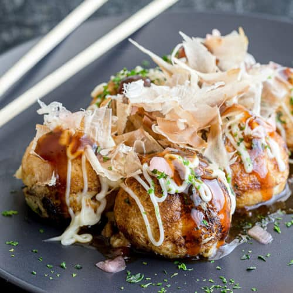

Takoyaki

Description
Translated to octopus balls, Takoyaki
is a Japanese cuisine. It is a ball-shaped snack made of wheat
flour-based batter and cooked in a molded pan.
It is typically filled with minced or diced octopus, tempura scraps,
pickled ginger, and green onion. It is typically brushed with
takoyaki sauce, drizzled with mayo, and sprinkled with bonito flakes.
Ingredients
- Takoyaki batter
- Octopus
- Tempura scraps
- Pickled ginger
- Green onion
- Takoyaki sauce
- Mayo
- Bonito flakes
Steps
- Mince octopus and chop green onion.
- Lightly oil takoyaki pan.
- Pour batter halfway into each hole.
- Add minced octopus, tempura scraps, pickled ginger, and green
onion into each hole.
- Cook halfway before rotating each piece on its side.
- Pour in more batter while cooking each ball.
- Cook and rotate the bals until they solidify and take shape.
- Plate the balls.
- Brush balls with takoyaki sauce.
- Drizzle mayo.
- Sprinkle with bonito flakes.